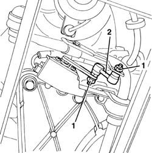

5540C48 BAR FOR REAR SENSOR FOR CORRECTING/ALIGNING GAS DISCHARGE LIGHTING UNITS R R
- Path
- Procedures > 55 ELECTRICAL EQUIPMENT > 5540 EXTERIOR LIGHTING > 5540C HEADLAMP/LIGHT CLUSTER ALIGNMENT CORRECTION DEVICES > 5540C48 BAR FOR REAR SENSOR FOR CORRECTING/ALIGNING GAS DISCHARGE LIGHTING UNITS R R
- Kind
- repair procedure (removal / refitting; the operation number is the code)
- Applies to
- all engines; all production periods
- Interactive page
- https://sloeber94.github.io/elrnDB-aGt/en/#/125001674
Applies to: all engines; all production periods
 Removing
Removing
 Refitting
RefittingPlace the vehicle on a lift and raise.
1. Working under the left rear suspension, undo the nuts fixing the connecting rod.
2. Remove the link.

Applies to: all engines; all production periods
Refitting
RemovingCheck that the link is not damaged.
Fit the link and tighten the nuts.
Remove the vehicle from the lift.